- Главная
- Автомобили
-
-

Легковые
-
Haval H2
Характеристики
-
Haval H6
Характеристики
-
-
- Конфигуратор
- Продажи и сервис
- Дилеры
- О Haval
- Контакты
История
История
Название бренда «HAVAL» произошло от английского словосочетание «Haveit All», что переводится как «Получи все и даже больше».
-
2017
- В сентябре HAVAL H6 Coupe был запущен в Южной Африке во время Фестиваля Motoring Kayalami
- В августе бренд HAVAL был официально запущен в Новой Зеландии
- В августе бренд HAVAL официально высадился в Саудовской Аравии с первым эксклюзивным магазином HAVAL
- В мае бренд HAVAL был заявлен в Южной Африке и запустил HAVAL H2
- В мае HAVAL былвключен в Национальную торговую программу
- В апреле Great Wall Motors заняла 43-е место в списке Interbrand «2017 лучших китайских брендов», стоимость бренда составила 3,24 млрд. юаней
- В апреле первая модель VV7 марки WEY запущена на автосалоне в Шанхае
- В апреле All-new HAVAL H6 запущен на автосалоне в Шанхае
- В апреле Great Wall Motors зайняла 65-е место в «Brand - 100 самых ценных китайских брендов»
- В марте GWM выиграла «премию за успешное послепродажное обслуживание в Китае в 2016 году»
-
2016
- В декабре годовой объем продаж Great Wall Motors достиг отметки в один миллион
- В ноябре HAVAL появился на 43-й Международной выставке в Багдаде
- В ноябре HAVAL открыл свой первый выставочный зал в Краснодаре в России
- В сентябре Blue-logo HAVAL H2 запущен на автосалоне в Чэндув Китае
- В сентябре HAVAL H6 Coupe стартовал в Австралии
- В августе HAVAL открыл свой первый выставочный зал в Ираке
- В июне HAVAL H2 запущен в Уругвае
- В апреле стартовал HAVAL в ОАЭ
- В апреле, HAVAL - Ведущий будущий тренд сияет в Пекинском автосалоне
- В апреле HAVAL H7 запущен на Пекинском автосалоне
- В марте HAVAL вышел на рынок Ближнего Востока и стартовал в Омане
- В феврале HAVAL расширяет свою деятельность с пятого эксклюзивного магазина, открытого в Австралии
- В Японии в г.Яунари компания Great WallMotors открыла Технологический центр исследований и разработок
-
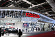
2015
- В декабре HAVAL открывает первый магазин в Бенине для расширения бизнес-операций в Африке
- В ноябре Great Wall Motors представили все автомобили HAVAL на авто шоу в Гуанчжоу
- В ноябре HAVAL выпускает дебют на автосалоне в АСЕАН, где HAVAL H2 зарабатывает высокую оценку
- В ноябре миллионный HAVAL H6 сошел с линии, HAVAL начал новое путешествие
- В ноябре HAVAL выступил на Международнойвыставке в Багдаде
- В октябре HAVAL высадился в Австралии в качественовой вехи в развитии зарубежного рынка
- В сентябре HAVAL появляется на выставке Expocruz 2015 для углубления операций в Южной Америке
- В сентябре HAVAL запускает три модели в Боливии
- В сентябре открывается 5-й фестиваль технологий в области науки
- В августе в Auto Harbin появилась модель HAVAL, возглавляемая H9.
- В июле открывается первый эксклюзивный магазин HAVAL в Грузии, Азербайджане и Эквадоре
- В июне HAVAL стартовал в Чили, первый автоцентр среди южноамериканских стран
- Как важный шаг, виюне HAVAL запускает флагманские модели в России
- В июне, HAVAL появляется в Шэньчжэне-Гонконге-Макаона авто шоу
- В мае в рамках награждения, организованного XCAR, HAVAL H9 был удостоен звания «Лучший внедорожник в 2015 году».
- В апреле гастрономический стенд HAVAL был признан и удостоен чести как «Большой творческий стенд» вовремя Автошоу в Шанхае 2015.
- В апреле HAVAL опубликовал стратегию Red / Blue для китайского рынка.
- В апреле HAVAL появился на Авто шоу в Шанхае 2015 с полным ассортиментом - 17 внедорожников HAVAL, 5 силовых агрегатов и шасси с новой энергией
- В апреле в Китае был запущенпервый в Китае купе SUV - HAVAL H6 Coupe
- В апреле в Китае был запущен супер-люкс HAVAL H8
-
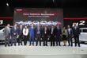
2014
- В декабре HAVAL опубликовала годовой объем продаж 519 418 единиц, заняв 1-е место на китайском рынке внедорожников 12-й год подряд.
- В ноябре в Китае были одновременно запущены семиместный внедорожник SUV - HAVAL H9 иHAVAL H1 был запущен одновременно.
- В октябре HAVAL H6 стал единственной моделью SUV с ежемесячными продажами в Китае более 30 000 единиц.
- В сентябре HAVAL защититил чемпионат 2014 года.
- В августе HAVAL появился на MIMS 2014.
- В августе HAVAL провел церемонию закладки фундамента Тульского завода в России.
- В апреле HAVAL появился на AutoChina 2014 с самой сильной линейкой внедорожников.
- В январе команда «HAVALDakar» в пятый раз соревновалась на ралли Дакар, выиграла первый этап и третий год подряд пройшла в первую десятку лучших;
-
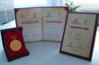
2013
- 31 декабря HAVAL заявил о сохранении титула лидера отечественного внедорожника 11-йгодподряд.
- В ноябре HAVAL H6 выиграл 15-ю Китайскую Золотую награду за патент в разработке и дизайне.
- В сентябре команда HAVAL проделала долгий путь и в конечном итоге заявила о название автомобиля и название команды, показывая супермощь международной команды.
- В марте HAVAL зарегистрировал продажи более 1 миллиона единиц, чтобы стать достойным экспертом по внедорожникам.
- В январе HAVAL H6 был увенчан как «CCTV внедорожник 2012 года».
- В январе HAVAL соревновался на ралли Дакар в четвертый раз как единственная китайская команда и блестяще финишировал 6-м.
-
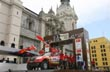
2012
- В декабре HAVAL опубликовал годовой объем продаж в 280 000 единиц, сохранив за собой титул лідера продажи внедорожников на китайском ринке в течение 10-го года подряд.
- В октябре HAVAL стал первым брендом SUV, который приземлился на острове Санша и в Арктике, демонстрируя свой характер.
- В апреле HAVAL H6 получил 5-звезд в результате краш-тестов по программе C-NCAP, что дало основания начать промышленную сборку.
- В январе HAVAL H6 был удостоен звания «Независимый внедорожник CCTV 2011 года».
- В январе «Команда HAVAL Dakar» в третий раз участвовала в ралли Дакар и заняла 6-е место в общем зачете.
-
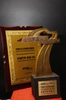
2011
- В декабре HAVAL H6 был удостоен чести как «Китайский внедорожник 2012 года».
- В августе новый завод GWM в Тяньцзи невступил в строй, и запустили производство HAVAL H6.
-
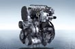
2010
- Самостоятельно разработанный 2.0T дизельный двигатель соответствовал развитию Haval.
-
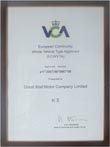
2009
- HAVAL H5 завоевал «Утверждение сертификата типа транспортного средства», получив право на бесплатные продажи в странах ЕС.
-
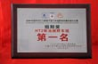
2008
- HAVAL защищал титул дизельного двигателя в ралли Taklimakan 2008 года и утверждал название производителя.
-
2007
- HAVALSUV был удостоен звания «Лучший независимый внедорожник марки CCTV 2006 года».
-
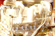
2006
- Начало производства электронно-управляемого дизельного двигателя высокого давления с системой Common-Rail, разработанный совместно с Bosch, и установка на модельный ряд HAVAL.
-
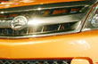
2005
- GWM запустила «кроссоверную модель» - HAVALSUV.
- В декабре HAVAL был удостоен чести как «Независимый CCTV внедорожник года», демонстрируя его профессиональное качество.
-
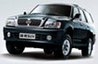
2003
- GWM стал чемпионом по продажам на рынке китайских внедорожников и сохранил титул на протяжении последующих лет.
-
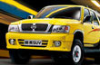
2002
- HAVAL запустил «Внедорожник стоимостью более 80 000 юаней», создав «безопасное явление» и установив лихорадку SUV на автомобильном ринке в Китае.